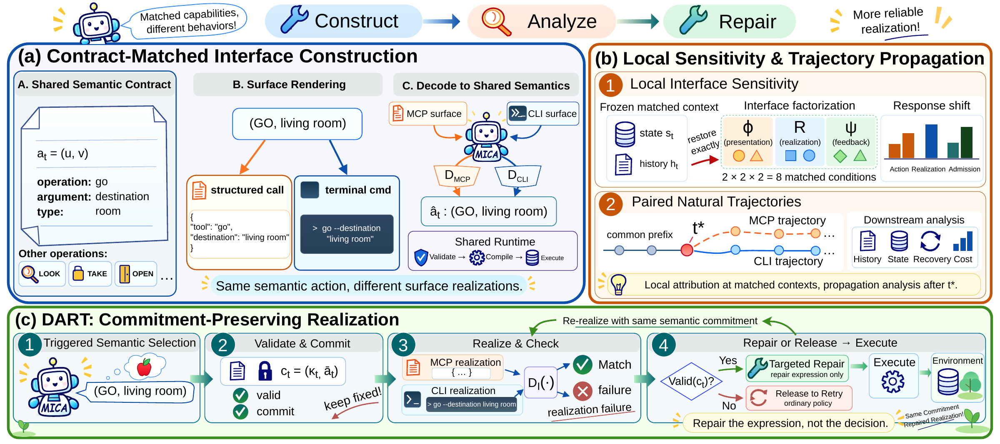
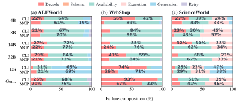
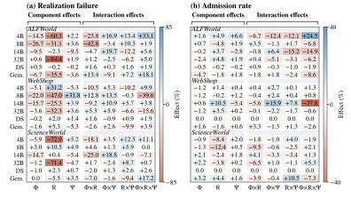
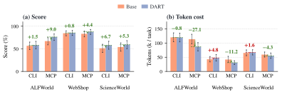

Overview
Matched Interface Comparison and Analysis (MICA) isolates the behavioral effect of interface representation while keeping executable capabilities fixed. It combines contract-matched MCP–CLI construction, matched-state and trajectory analysis, and commitment-preserving realization with DART.

Abstract
Language agents increasingly act through external tools and interactive environments, making the interface between the model and its executable capabilities part of the decision process. Model Context Protocol (MCP) and command-line interfaces (CLI) can expose the same semantic operations through markedly different model-facing representations. We study whether these representational differences change agent behavior when executable capabilities are matched. We introduce Matched Interface Comparison and Analysis (MICA), which renders MCP and CLI from a shared semantic action contract and routes decoded actions through the same runtime. Across six models and three interactive environments, matched interfaces produce substantial differences in task performance and interaction cost. These effects extend beyond surface validity to semantic action selection, failure pathways, and recovery. Matched-state probes localize sensitivity to capability presentation, realization, and feedback. Paired natural trajectories reveal structured divergence in 94.3% of 2,004 episodes and show that early differences propagate through subsequent interaction. This analysis identifies interface realization as a direct intervention boundary. We therefore introduce Decoupled Action Realization and Targeted Repair (DART), which preserves validated semantic commitments while repairing interface-specific realization. DART improves benchmark score in all six evaluated settings by up to 9.0 points and reduces MCP token cost in all three environments by up to 27.1k tokens per task. Together, these results establish interface representation as part of the closed-loop decision environment shaping agent behavior.
Method
- Contract-matched interfaces. MICA constructs MCP and CLI from a common benchmark-specific semantic contract, fixing the executable action space while varying its model-facing representation. MCP exposes named tools with structured arguments, whereas CLI exposes registered commands with textual argument bindings.
- Local sensitivity and trajectory propagation. Matched-state probes vary interface components at a fixed decision context, while paired natural trajectories trace what follows after the first consequential divergence.
- DART: Commitment-Preserving Realization. DART (Decoupled Action Realization and Targeted Repair) targets the realization boundary exposed by MICA. It separates semantic action selection from interface-specific expression so that a validated decision remains fixed while its realization is repaired. If the initial realization fails while the commitment remains valid, DART keeps the commitment fixed and issues one preserving correction conditioned on the failed expression and its public feedback. The correction may change the interface-specific expression while preserving the committed operation and every normalized typed argument.
Results
Task Performance and Interaction Cost
Table 1 shows that both the direction and magnitude of the interface effect vary across model–environment pairs. For Qwen3-14B, MCP trails CLI by 36.6 score points on ALFWorld ( vs. ) but exceeds it by 4.9 points on WebShop ( vs. ).
| Model | Score (%) | Tokens (k / task) | ||||
|---|---|---|---|---|---|---|
| Native | CLI (Δ) | MCP (Δ) | Native | CLI (Δ%) | MCP (Δ%) | |
| ALFWorld | ||||||
| Qwen3-4B | 50.0 | 44.8−5.2 | 41.8−8.2 | 295.5 | 384.2+30.0% | 387.1+31.0% |
| Qwen3-8B | 31.3 | 44.8+13.4 | 35.1+3.7 | 273.5 | 292.4+6.9% | 356.5+30.3% |
| Qwen3-14B | 62.7 | 56.7−6.0 | 20.1−42.5 | 176.9 | 241.9+36.7% | 296.8+67.8% |
| Qwen3-32B | 85.1 | 73.9−11.2 | 78.4−6.7 | 72.4 | 114.7+58.3% | 106.5+46.9% |
| DeepSeek-v4-Flash | 97.0 | 99.3+2.2 | 95.5−1.5 | 50.5 | 58.0+14.8% | 56.7+12.4% |
| Gemini-2.5-Flash | 67.2 | 56.7−10.4 | 67.20.0 | 86.7 | 120.0+38.3% | 113.8+31.2% |
| WebShop | ||||||
| Qwen3-4B | 62.9 | 58.3−4.6 | 64.1+1.2 | 32.5 | 37.6+15.9% | 36.3+11.7% |
| Qwen3-8B | 57.7 | 59.5+1.8 | 56.8−0.9 | 66.2 | 89.6+35.4% | 78.8+19.0% |
| Qwen3-14B | 54.9 | 59.5+4.6 | 64.4+9.5 | 92.9 | 83.1−10.5% | 48.1−48.3% |
| Qwen3-32B | 64.0 | 61.6−2.4 | 65.7+1.7 | 85.8 | 80.4−6.3% | 88.6+3.3% |
| DeepSeek-v4-Flash | 86.0 | 83.0−3.0 | 83.5−2.5 | 63.8 | 69.1+8.3% | 65.1+2.1% |
| Gemini-2.5-Flash | 82.2 | 84.5+2.3 | 83.3+1.0 | 54.9 | 42.8−22.1% | 41.9−23.8% |
| ScienceWorld | ||||||
| Qwen3-4B | 37.5 | 41.0+3.5 | 37.9+0.4 | 100.8 | 106.9+6.1% | 108.7+7.9% |
| Qwen3-8B | 51.1 | 46.9−4.2 | 53.0+1.9 | 82.6 | 82.5−0.2% | 101.1+22.5% |
| Qwen3-14B | 35.8 | 39.5+3.7 | 35.1−0.7 | 60.6 | 73.4+21.0% | 76.0+25.3% |
| Qwen3-32B | 63.9 | 61.3−2.6 | 60.7−3.2 | 73.7 | 80.9+9.9% | 83.8+13.8% |
| DeepSeek-v4-Flash | 81.3 | 77.5−3.7 | 75.3−6.0 | 77.2 | 97.4+26.1% | 93.1+20.5% |
| Gemini-2.5-Flash | 52.4 | 51.2−1.2 | 54.0+1.6 | 61.0 | 65.2+7.0% | 59.2−2.8% |
Failure and Recovery
Figure 2 shows that unsuccessful attempts enter different stages of the action pipeline under MCP and CLI. On WebShop, MCP lowers the attempt-level failure rate for all six models by 1.1–8.9 percentage points, while the remaining failures shift from the stronger surface-decoding component under CLI toward later availability and execution stages.

Local Effects and Trajectory Propagation
Figure 3 separates presentation, realization, and feedback at matched decision states. Realization produces the largest local shifts in several strata. Its realization-failure effect reaches 84.4 percentage points for ALFWorld/Qwen3-32B and 72.9 points for ScienceWorld/Qwen3-4B.

DART Evaluation
DART improves task performance in every evaluated setting. Figure 4 reports gains of points on ALFWorld, on WebShop, and on ScienceWorld for CLI/MCP, respectively. Under MCP, these gains are accompanied by token reductions of 27.1k, 11.2k, and 4.3k per task across the three environments. Under CLI, token cost changes by k, k, and k.

Acknowledgements
We thank the teams behind Qwen3, ALFWorld, WebShop, ScienceWorld, vLLM, and Transformers for their open-source models, environments, and tools.
MICA is licensed under the MIT License.